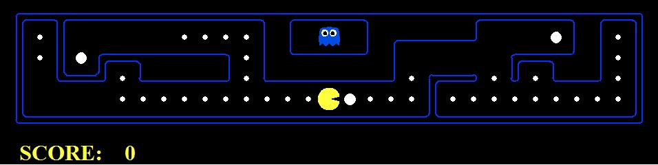

Rango Massimiliano, Segato Silvia
Corso di Intelligenza Artificiale 2012 / 2013

Il progetto è stato realizzato nell'anno accademico 2012/2013 per il corso di Intelligenza Artificiale dell'Università degli Studi di Padova e si basa sul primo di una serie di progetti parzialmente implementati messi a disposizione dalla University of Califonia, Berkeley e disponibili alla pagina http://www-inst.eecs.berkeley.edu/~cs188/pacman/pacman.html.
Lo scopo di questo progetto è quello di implementare alcuni algoritmi di ricerca su grafi applicandoli a tre diversi problemi inerenti il mondo di Pac-Man. In questo contesto Pac-Man si trova da solo in un labirinto di dimensioni e disposizione dei muri casuali e deve riuscire a mangiare tutto il cibo presente, collocato in modo diverso a seconda del particolare problema preso in esame.
Il progetto ha richiesto un totale di 50 ore complessive (25 ore a persona), suddivise nel seguente modo:
| Fase | Ore | Descrizione |
|---|---|---|
| Analisi dei requisiti | 11 | Studio di Python, studio della struttura del progetto e dei file da modificare. |
| Progettazione | 20 | Progettazione dell'implementazione degli algoritmi di ricerca su grafo, euristiche e strutture dati da utilizzare. |
| Programmazione | 10 | Implementazione algoritmi, euristiche e strutture dati. |
| Test e Raccolta Dati | 4 | Confronto tra i diversi algoritmi, tra le diverse euristiche considerando il tempo d'esecuzione, il costo del percorso trovato e il numero di nodi espansi. |
| Documentazione | 5 | Stesura relazione finale e presentazione. |
Il codice del progetto si trova all’interno della cartella /search. Al suo interno si trovano la cartella /layout che contiene le strutture dei labirinti con la posizione del cibo e la posizione iniziali di Pac-Man, e una serie di file Python che costituiscono il cuore del gioco.
I file riguardanti la grafica non sono stati usati per lo svolgimento del progetto e sono:
| Nome File | Descrizione |
|---|---|
| graphicDisplay.py | grafica per Pac-Man |
| graphicUtil.py | supporto per la grafica |
| textDisplay.py | grafica ASCII per Pac-Man |
| ghostAgents.py | agenti per controllare i fantasmi |
| keyboardAgents.py | interfaccia per controllare Pac-Man con la tastiera |
| layout.py | codice per leggere i file contenuti in /layout |
| Nome File | Descrizione |
|---|---|
| pacman.py | file principale che esegue il gioco; in particolare è stato necessario prestare attentione al tipo GameState |
| game.py | contiene la logica del mondo di Pac-Man |
| util.py | contiene le strutture dati utili per l’implementazione degli algoritmi di ricerca |
| Nome File | Descrizione |
|---|---|
| search.py | contiene l’implememtazione di tutti gli algoritmi di ricerca |
| searchAgents.py | contiene l’implementazione di tutti gli agenti |
Il gioco si avvia sempre tramite riga di comando. È possibile controllare Pac-Man con la tastiera (e quindi permettere ad un utente di poter effetivamente giocare) con il seguente comando:
python pacman.pyNel corso del progetto è stato necessario utilizzare diversi tipi di layout, algoritmo (con euristica per quelli che ne utilizzano una), agenti in base al problema considerato. Tali cambiamenti vengono attuati via riga di comando specificando le opzioni dopo il comando sopra; la lista delle opzioni è elencata eseguendo
python pacman.py –hTutti i comandi che sono stati utilizzati nel progetto sono contenuti in
/search/command.txt.
Il primo problema preso in considerazione consiste nel far raggiungere a Pac-Man un punto fissato all’interno del labirinto tramite diversi algoritmi di ricerca visti a lezione, nello specifico: depth-first, breadth-first, costo uniforme e A*.La rappresentazione dei nodi nel grafo di ricerca è data dalla funzione getSuccessors della classe PositionSearchProblem. Un nodo è rappresentato dalle coordinate x e y nel labirinto, dall'insieme di azioni e dal costo complessivo per arrivare a quello stato. Si è deciso di implementare innanzitutto una funzione di ricerca generica che utilizzasse come frontiera una lista astratta, istanziata a seconda del caso specifico come una pila, una coda, o una coda con priorità. Questa funzione deve ritornare una lista di azioni che conducono l'agente dallo stato iniziale al goal. La genericSearch è quindi definita come segue:
def genericSearch(problem, frontiera, euristica=nullHeuristic): esplorati = [] frontiera.push((problem.getStartState(), [] , 0), 0) while(not(frontiera.isEmpty())): stato, azioni, costo = frontiera.pop() if problem.isGoalState(stato): return azioni #soluzione corrispondente esplorati.append(stato) successori = problem.getSuccessors(stato) for statoSuccessore, azioneSuccessore, costoSuccessore in successori: nuovaAzione = azioni + [azioneSuccessore] nuovoCosto = costo + costoSuccessore #g(n) nodoSuccessore = (statoSuccessore, nuovaAzione, nuovoCosto) if statoSuccessore not in esplorati and not frontiera.contains(statoSuccessore, nuovoCosto): frontiera.push(nodoSuccessore, nuovoCosto + euristica(statoSuccessore, problem)) return None
Finché la frontiera non è vuota o non si raggiunge lo stato goal, viene estratto l’elemento successivo (in modo dipendente dal supporto di memorizzazione specifico), viene ricavata la lista dei successori del nodo corrente e quelli non ancora esplorati vengono aggiunti alla frontiera. Le implementazioni degli algoritmi specifici risultano a questo punto triviali, in quanto è sufficiente istanziare il supporto di memorizzazione corretto.
def depthFirstSearch(problem):
"Search the deepest nodes in the search tree first"
frontiera = util.Stack()
return genericSearch(problem, frontiera)
La frontiera è implementata come una pila LIFO, in questo modo viene estratto sempre il nodo inserito per ultimo, il che realizza la visita del grafo in profondità. L'algoritmo è stato eseguito sui labirinti tinyMaze, mediumMaze e bigMaze. E` possibile lanciare la ricerca DFS sui diversi layout nel seguente modo:
python pacman.py -l layout -p SearchAgent -a fn=dfs
dove
layout
è il layout preso in considerazione. I risultati ottenuti sono i seguenti:
| Layout | Tempo impiegato (s) | Nodi espansi | Costo percorso |
|---|---|---|---|
| tinyMaze | 0.0 | 15 | 10 |
| mediumMaze | 0.0 | 146 | 130 |
| bigMaze | 0.1 | 390 | 210 |
def breadthFirstSearch(problem): "Search the shallowest nodes in the search tree first." frontiera = util.Queue() return genericSearch(problem, frontiera)
La frontiera è implementata come una coda FIFO, in questo modo viene estratto sempre il nodo inserito per primo, il che realizza la visita del grafo in ampiezza. L'algoritmo è stato eseguito sui labirinti tinyMaze, mediumMaze e bigMaze. E` possibile lanciare la ricerca BFS sui diversi layout nel seguente modo:
python pacman.py -l layout -p SearchAgent -a fn=bfs
dove layout è il layout preso in considerazione. I risultati ottenuti sono i seguenti:
| Layout | Tempo impiegato (s) | Nodi espansi | Costo percorso |
|---|---|---|---|
| tinyMaze | 0.0 | 15 | 8 |
| mediumMaze | 0.0 | 269 | 68 |
| bigMaze | 0.1 | 620 | 210 |
def uniformCostSearch(problem): "Search the node of least total cost first." frontiera = util.PriorityQueue() return genericSearch(problem, frontiera)
La frontiera è implementata come una coda con priorità, in questo modo viene estratto per primo sempre il nodo con priorità più alta. L'algoritmo è stato eseguito sui labirinti mediumMaze e bigMaze come tutti gli altri algoritmi. Inoltre è stato testato sul labirinto mediumDottedMaze con agente StayEastSearchAgent, che penalizza i passi verso la parte sinistra del labirinto, e sul labirinto mediumScaryMaze con agente StayWestSearchAgent che penalizza i passi verso la parte destra del labirinto. E` possibile lanciare la ricerca DFS sui diversi layout nel seguente modo:
python pacman.py -l layout -p SearchAgent -a fn=ucs
dove layout è il layout preso in considerazione. Per gli agenti StayEastSearchAgent e StayWestSearchAgent i problemi sono diversi e devono essere eseguiti con la seguente sintassi:
python pacman.py -l mediumDottedMaze -p StayEastSearchAgent python pacman.py -l mediumScaryMaze -p StayWestSearchAgent
I risultati ottenuti sono i seguenti:
| Layout | Tempo impiegato (s) | Nodi espansi | Costo percorso |
|---|---|---|---|
| mediumMaze | 0.0 | 268 | 68 |
| bigMaze | 0.1 | 619 | 210 |
| mediumDottedMaze | 0.0 | 190 | 1 |
| mediumScaryMaze | 0.0 | 108 | 68719479864 |
Il costo dei percorsi trovati dall'agente StayEastSearchAgent e StayWestSearchAgent è molto basso nel primo caso e molto alto nel secondo, a causa delle loro funzioni di costo. Il primo infatti eleva 0.5 al valore della coordinata x (maggiore è il valore di x, minore è il costo), rendendo la somma dei costi sempre minore di 1. Il secondo invece eleva 2 al valore della coordinata x, in questo modo maggiore è il valore di x, maggiore è il costo.
def aStarSearch(problem, heuristic=nullHeuristic): "Search the node that has the lowest combined cost and heuristic first." frontiera = util.PriorityQueue() return genericSearch(problem, frontiera, heuristic)
La frontiera è implementata come una coda con priorità, in cui la priorità è data dall'euristica passata all'algoritmo. L'algoritmo è stato eseguito sui labirinti mediumMaze e bigMaze come tutti gli altri algoritmi. Inoltre è stato testato sul labirinto bigMaze con euristica nulla e con la distanza di Manhattan. Quest'ultima restituisce la somma dei valori assoluti delle differenze tra le coordinate dello stato corrente e del goal. E` possibile lanciare la ricerca A* sui diversi layout nel seguente modo:
python pacman.py -l layout -p SearchAgent -a fn=astar
Aggiungendo la distanza di Manhattan come euristica invece:
python pacman.py -l layout -p SearchAgent -a fn=astar,heuristic=manhattanHeuristic
dove layout è il layout preso in considerazione. I risultati ottenuti sono i seguenti:
| Layout | Euristica | Tempo impiegato (s) | Nodi espansi | Costo percorso |
|---|---|---|---|---|
| mediumMaze | Manhattan Distance | 0.0 | 221 | 68 |
| bigMaze | Null | 0.1 | 619 | 210 |
| bigMaze | Manhattan Distance | 0.1 | 538 | 210 |
Si può notare come in mancanza di un'euristica, l'algoritmo corrisponda esattamente la ricerca con costo uniforme. Utilizzando la distanza di Manhattan invece l'algoritmo riesce a trovare una soluzione più velocemente. La soluzione trovata inoltre è ottima, poichè l'euristica è ammissibile e consistente. L'ammissibilità deriva dal fatto che l'eurisitca non sovrastima mai il costo della soluzione ottima, essendo la distanza di Manhattan il minor numero di passi per raggiungere un punto in assenza di muri. La consistenza invece è verificata poichè ogni passo ha costo 1 ed ogni passo avvicina al più di 1 Pac-Man al cibo: la disequazione h(n) ≤ h(n') + 1 è pertanto vera.
Prendendo come metodo di confronto i dati ottenuti sul mediumMaze è evidente che tra questi algoritmi, a "vincere" è A* con euristica distanza di Manhattan, espandendo 221 nodi. L'algoritmo Depth-first infatti trova la soluzione espandendo solo 146 nodi, ma non riesce a trovare quella ottima, essendo il costo del percorso trovato 130.
In questo secondo problema vengono utilizzati i layout cornerMazes; questi contengono 4 cibi, uno in ogni angolo del labirinto e Pac-Man, attraverso gli algoritmi di ricerca, deve essere in grado di trovare il percorso più breve attraverso il labirinto che tocchi tutti e quattro gli angoli. La rappresentazione degli stati scelta per questo problema è la seguente:
(posizione corrente di Pac-Man, angoli già visitati)
Tale rappresentazione è nata dopo lo studio attento dei problemi già implementati all’interno del file searchAgents.py ed utilizza le sole parti del GameState che sono necessarie, come indicatoci dalla consegna (sebbene ciò comporti allo stato di “ricordarsi” degli angoli visitati in precedenza). Quindi lo stato iniziale è (posizione iniziale di Pac-Man, angoli visitati), dove in angoli visitati ci sarà la posizione iniziale di Pac-Man se questa è un angolo, altrimenti è vuoto.
self.statoIniziale = (self.startingPosition, angoliVisitati)
Il controllo per lo stato goal consiste nel confrontare l’insieme degli angoli del problema con l’insieme degli angoli visitati. Se i due insiemi sono uguali, allora lo stato è uno stato goal.
def isGoalState(self, state):
return set(state[1]) == set(self.corners)
La funzione sucessore, invece, ritorna gli stati sucessori come un insieme di triple (così come indicatoci nella consegna); ciascuna tripla è composta da:
def getSuccessors(self, state):
successors = []
for action in [Directions.NORTH, Directions.SOUTH, Directions.EAST, Directions.WEST]:
x,y = state[0]
dx, dy = Actions.directionToVector(action)
prossimaPosizione = nextx, nexty = int(x + dx), int(y + dy)
hitsWall = self.walls[nextx][nexty]
if not hitsWall:
angoliVisitati = set(state[1])
if prossimaPosizione in self.corners and prossimaPosizione not in angoliVisitati:
angoliVisitati.add(prossimaPosizione)
prossimoStato = (prossimaPosizione, angoliVisitati)
costoAzione = self.costFn(prossimoStato)
successors.append( (prossimoStato , action, costoAzione) )
self._expanded += 1
return successors
Tale problema è implementato nel file searchAgents.py, nella classe CornersProblem, seguendo la struttura e le firme dei metodi a disposizione. Le funzioni che sono state da noi implementate sono il costruttore, getStartState, isGoalState, getSuccessors.
Al fine di poter risolvere il problema utilizzando l’algoritmo A*, si è provveduto a definire e implementare un'euristica ammissibile (come richiestoci dalla consegna). L’euristica scelta si comporta come segue:
def cornersHeuristic(state, problem):
prossimoAng, distanza = prossimoAngolo(state, problem, manhattanDistance)
if prossimoAng != None:
return distanza + cornersHeuristic(prossimoAng, problem)
return 0
def prossimoAngolo(state, problem, distanceFunction):
posizioneCorrente, angoliVisitati = state
angoliNonVisitati = set(problem.corners) - angoliVisitati
distProssimoAng = sys.maxint
prossimoAng = None
for angolo in angoliNonVisitati:
#problem.goal = angolo
distanza = distanceFunction(posizioneCorrente, angolo)
if distanza < distProssimoAng:
distProssimoAng = distanza
prossimoAng = (angolo, angoliVisitati.union(set((angolo,))))
return (prossimoAng, distProssimoAng)
Al fine di verificare se la nostra rappresentazione degli stati era corretta, abbiamo seguito il test proposto nella consegna. Tale consiste nell’ eseguire i due comandi sottostanti; la rappresentazione del problema doveva far si che l’agente riuscisse a risolvere con successo i due problemi lanciati.
python pacman.py -l tinyCorners -p SearchAgent –a fn=bfs,prob=CornersProblem python pacman.py -l mediumCorners -p SearchAgent -a fn=bfs,prob=CornersProblem
La nostra rappresentazione risolve correttamente i due problemi.
L’euristica invece è stata testata utilizzando tre tipi di distanze: la disanza di Manhattan, la distanza euclidea e la distanza di Chebyshev. Il confronto tra i dati ottenuti ci sottolinea come la distanza Manhattan sia dominante nei confronti delle altre due, mentre la distanza euclidea è dominante solo sulla distanza di Chebyshev.
I dati ottenuti con il layout mediumCorners sono i seguenti:
| Euristica | Tempo impiegato (s) | Nodi espansi | Costo percorso |
|---|---|---|---|
| Manhattan Distance | 0.1 | 106 | 755 |
| Euclidean Distance | 0.1 | 106 | 818 |
| Chebyshev Distance | 0.2 | 106 | 888 |
bigCorners sono i seguenti:
| Euristica | Tempo impiegato (s) | Nodi espansi | Costo percorso |
|---|---|---|---|
| Manhattan Distance | 0.4 | 162 | 1813 |
| Euclidean Distance | 0.5 | 162 | 2044 |
| Chebyshev Distance | 0.6 | 162 | 2296 |
python pacman.py -l mediumCorners -p AStarCornersAgent -z 0.5
Quest'ultimo problema richiede di far mangiare a Pac-Man tutto il cibo presente nel labirinto nel minor numero di passi possibile. La quantità e la disposizione del cibo sono casuali. Il problema è codificato nella classe FoodSearchProblem del file searchAgents.py. Uno stato del grafo di ricerca è rappresentato dalla coppia:
(posizione di Pac-Man, griglia del cibo)
dove la griglia del cibo è un array a 2 dimensioni di booleani rappresentante il labirinto, in cui un singolo elemento è a true se in quella posizione (x,y) è presente del cibo. La richiesta è pertanto quella di costruire un'euristica ammissibile e consistente per l'algoritmo A* che riesca a trovare la soluzione ottima.
La nostra idea inizialmente è stata quella di usare un'euristica simile a quella del problema precedente, che memorizzasse cioè di volta in volta la distanza minore tra Pac-Man ed ogni cibo rimanente e sommasse queste distanze. Purtroppo un'euristica di questo tipo non è ammissibile per questo problema perchè ad esempio nel seguente layout cercherebbe prima di mangiare il cibo più vicino subito sulla destra, poi tornerebbe a sinistra e infine mangerebbe l'ultimo cibo in fondo a destra, sovrastimando così il costo della soluzione ottima (che consiste invece nel raggiungere prima l'angolo di sinistra e poi quello di destra).
Un'euristica più semplice ma che espande molti più nodi potrebbe essere quella del "nearest neghbour", che considera in ogni stato la distanza al cibo più vicino. La lentezza dell'euristica tuttavia può essere risolta sommando a questo fattore la distanza tra i due cibi più distanti rimasti nel labirinto. Quest'euristica è ammissibile e consistente e riesce a trovare la soluzione ottima nel layout trickySearch espandendo relativamente pochi nodi. Eseguendo infatti il comando
python pacman.py -l trickySearch -p AStarFoodSearchAgent
otteniamo la soluzione ottima di costo 60 con 8111 nodi espansi ed un tempo di 12.3 secondi.
Vediamo ora perchè l'euristica è consistente. Definiamo:
D = massima distanza di Manhattan tra i due cibi più distanti nel labirinto (detti estremi) d = distanza di Manhattan tra Pac-Man e il cibo a lui più vicino
Sia inoltre n uno stato, n' un suo successore. Allora si ha:
h(n) = D + d h(n') = D' + d'
La condizione di consistenza afferma che:
h(n) ≤ h(n') + c(n, a, n')
Poichè sappiamo che il costo di un passo c(n, a, n') nel labirinto è sempre 1, la condizione diventa:
D + d ≤ D' + d' + 1
Ciascun cibo è disposto nella griglia nel momento della definizione del problema e durante la ricerca non ne possono essere aggiunti. Pertanto durante tutta l'esecuzione dell'algoritmo vale:
D ≥ D'
Dopo che Pac-Man ha effettuato un movimento possono essere vere due condizioni esclusive: D = D' oppure D > D'.
Il fatto che D resti invariato, implica che Pac-Man non abbia mangiato nessuno dei cibi "estremi" e che i cibi più vicini a lui non siano "estremi". Pac-Man può quindi trovarsi in due stati:
d' = d - 1. Possiamo quindi così riscrivere la condizione di consistenza:
D + d ≤ D + d - 1 + 1, semplificando D + d ≤ D + dche è sempre vera.
d = 1). Il nuovo cibo più vicino sarà almeno a distanza 1 da Pac-Man (d' ≥ 1). La relazione di consistenza diventa quindi:
D + 1 ≤ D + d' + 1, semplificando 0 ≤ d'che anche in questo caso è sempre vera.
In questo caso Pac-Man ha mangiato uno degli "estremi" nello stato n', e questo fa diventare la distanza tra i due nuovi "estremi" minore di quella precedente. Vale d = 1 perchè nello stato n, prima che venisse mangiato l'estremo, Pac-Man si trovava a distanza 1 da esso. Inoltre consideriamo la figura sottostante che consiste nell'area semplificata di un labirinto senza i muri interni e in cui i punti rossi corrispondono al cibo. E` sempre vero che d' ≥ D - D' perchè nell'area azzurra non potrà essere rimasto del cibo, altrimenti D' non sarebbe la nuova massima distanza tra i due cibi "estremi". Il cibo più vicino a Pac-Man nello stato n', dovrà quindi essere contenuto nell'area arancione.
Quest'ultima disequazione può essere riscritta come:
d' = D - D' + h, con h ≥ 0
La condizione di consistenza diventa quindi:
D + 1 ≤ D' + D - D' + h + 1, semplificando 0 ≤ h
che è sempre vera. Pertanto la condizione di consistenza è verificata in ogni caso. Poichè l'euristica è consistente, è anche ammissibile e questo garantisce l'ottimalità della soluzione trovata. La codifica scelta dell'euristica è quindi la seguente:
def foodHeuristic(state, problem):
return calculateHeuristic(state, problem, manhattanDistance)
def calculateHeuristic(state, problem, distance):
position, foodGrid = state
foodList = foodGrid.asList()
maxDistanzaCibi = 0
minDistanzaCiboPacman = 0
#aggiorno maxDistanzaCibi
for cibo1 in foodList:
for cibo2 in foodList:
#se il valore è già presente nel database aggiorno maxDistanzaCibi
if (cibo1, cibo2) in problem.heuristicInfo:
if maxDistanzaCibi < problem.heuristicInfo[(cibo1, cibo2)]:
maxDistanzaCibi = problem.heuristicInfo[(cibo1, cibo2)]
elif (cibo2, cibo1) in problem.heuristicInfo:
if maxDistanzaCibi < problem.heuristicInfo[(cibo2, cibo1)]:
maxDistanzaCibi = problem.heuristicInfo[(cibo2, cibo1)]
else: #se non è nel database, lo calcolo e lo aggiungo al database
problem.heuristicInfo[(cibo1, cibo2)] = distance(cibo1, cibo2, problem.startingGameState)
if maxDistanzaCibi < problem.heuristicInfo[(cibo1, cibo2)]:
maxDistanzaCibi = problem.heuristicInfo[(cibo1, cibo2)]
#aggiorno minDistanzaCiboPacman
#i controlli minDistanzaCiboPacman == 0 riducono drastiucamente il numero di nodi espansi
for cibo in foodList:
#se c'è un valore corrispondente nel database
if (cibo, position) in problem.heuristicInfo:
if minDistanzaCiboPacman == 0 or minDistanzaCiboPacman > problem.heuristicInfo[(cibo, position)]:
minDistanzaCiboPacman = problem.heuristicInfo[(cibo, position)]
elif (position, cibo) in problem.heuristicInfo:
if minDistanzaCiboPacman == 0 or minDistanzaCiboPacman > problem.heuristicInfo[(position, cibo)]:
minDistanzaCiboPacman = problem.heuristicInfo[(position, cibo)]
else: #se non c'è un valore associato alla cella, lo calcolo e lo inserisco nel database
problem.heuristicInfo[(position, cibo)] = distance(position, cibo, problem.startingGameState)
if minDistanzaCiboPacman == 0 or minDistanzaCiboPacman > problem.heuristicInfo[(position, cibo)]:
minDistanzaCiboPacman = problem.heuristicInfo[(position, cibo)]
return maxDistanzaCibi + minDistanzaCiboPacman
L'implementazione del problema fornita comprende anche un metodo mazeDistance che dati due punti ritorna la distanza tra di loro calcolata effettuando una ricerca BFS. Utilizzando questa euristica invece della distanza di Manhattan si ottengono risultati notevolmente migliori, infatti otteniamo la soluzione ottima di costo 60 con 726 nodi espansi ed un tempo di 10.9 secondi. Tuttavia non abbiamo approfondito questo tema in quanto vengono utilizzati i database di pattern, argomento non trattato a lezione.
Dalle fasi di progettazione e realizzazione dei test abbiamo compreso la centralità di determinati problemi. In primo luogo è stato essenziale scegliere le migliori strutture dati da utilizzare nell'implementazione degli algoritmi di ricerca prima, della struttura dei problemi poi.
Altrettanto importante, nonchè essenziale, è stata la scelta della rappresentazione degli stati dei problemi che la consegna ci proponeva, e delle loro euristiche.
Le nostre soluzioni hanno portato a risultati in linea con quanto ci aspettavamo e che rispettano non solo la consegna ma anche i fondamenti teorici che vi sono alla base.
Le nostre soluzioni potranno essere ulteriormente revisionate e migliorate in futuro e, come possibilli estensioni, sarà possibile realizzare anche le sucessive parti del problema, che trattano ulteriori argomenti di intelligenza artificiale al fine di avere l'intero gioco automatizzato